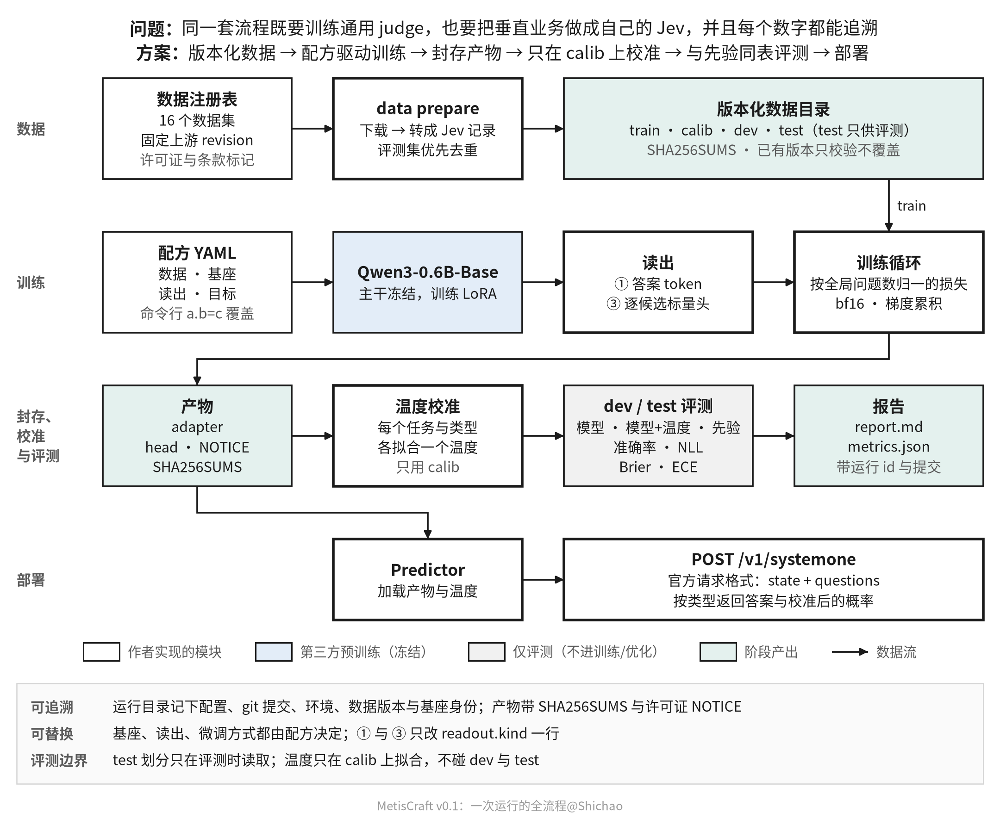
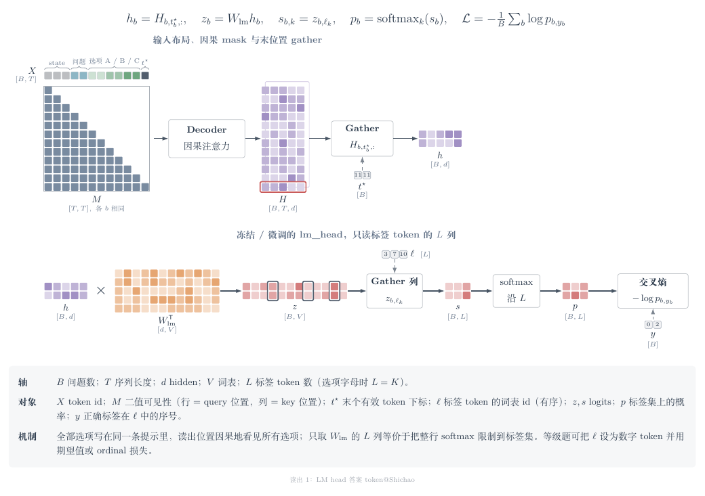
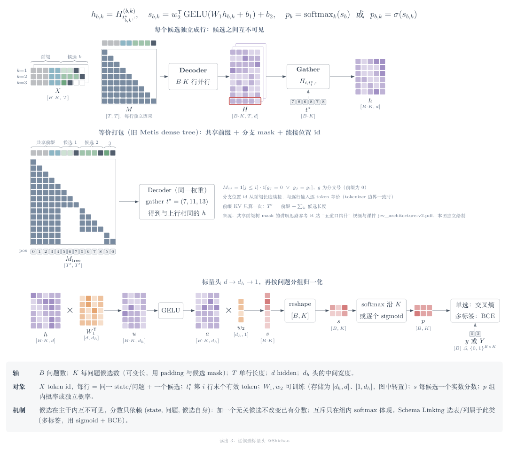
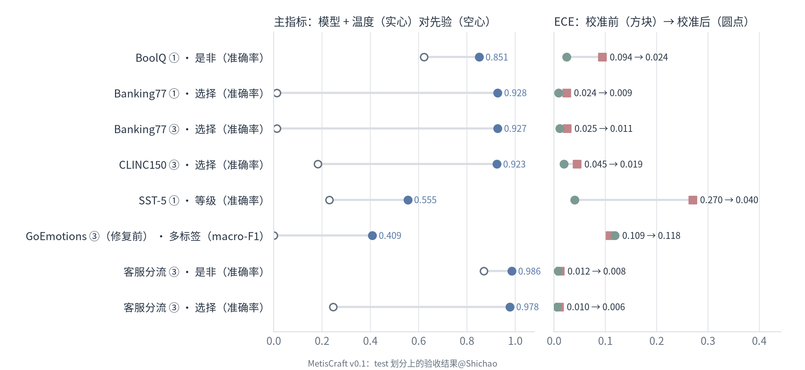
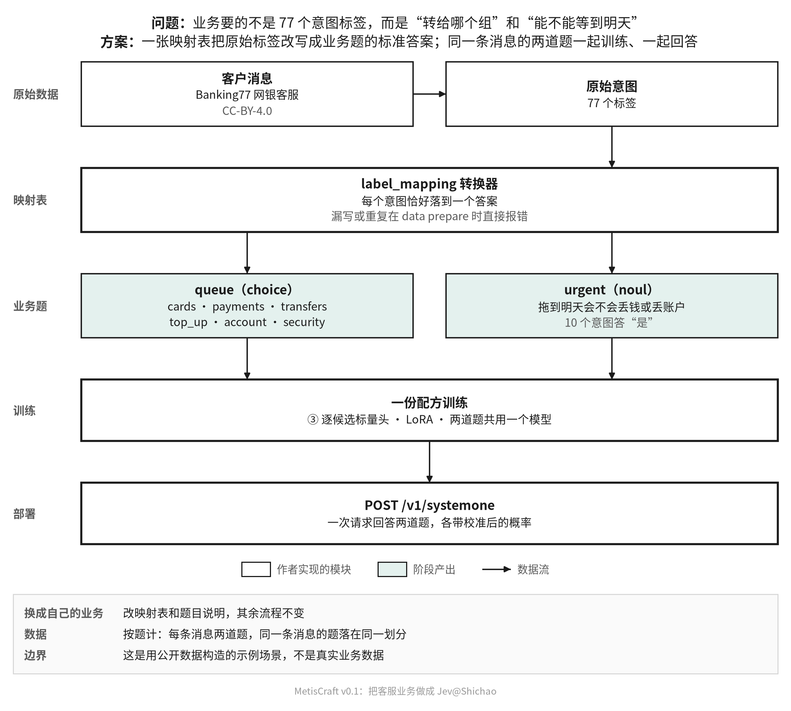

MetisCraft v0.1 交付报告
训练 Jev 类（System One）决策模型的工具包：一次前向给出类型化判断和校准过的概率。既支持通用 judge，也能把垂直业务场景做成自己的 Jev。
验收一览（test 划分）
| 配方 | 类型 | 主指标 | n | 模型 + 温度 | 先验 | NLL 校准前 → 后 | ECE 校准前 → 后 | 温度 |
|---|---|---|---|---|---|---|---|---|
| BoolQ ① | 是非 | 准确率 | 3,270 | 0.851 | 0.622 | 0.469 → 0.360 | 0.094 → 0.024 | 2.05 |
| Banking77 ① | 选择 | 准确率 | 3,080 | 0.928 | 0.013 | 0.307 → 0.298 | 0.024 → 0.009 | 1.17 |
| Banking77 ③ | 选择 | 准确率 | 3,080 | 0.927 | 0.013 | 0.302 → 0.280 | 0.025 → 0.011 | 1.33 |
| CLINC150 ③ | 选择 | 准确率 | 5,500 | 0.923 | 0.182 | 0.341 → 0.294 | 0.045 → 0.019 | 1.36 |
| SST-5 ① | 等级 | 准确率 | 2,210 | 0.555 | 0.231 | 1.380 → 1.014 | 0.270 → 0.040 | 2.45 |
| GoEmotions ③（修复前） | 多标签 | macro-F1 | 5,427 | 0.409 | 0.000 | 0.221 → 0.215 | 0.109 → 0.118 | 1.25 |
| 客服分流 ③ | 是非 | 准确率 | 3,080 | 0.986 | 0.870 | 0.065 → 0.049 | 0.012 → 0.008 | 1.55 |
| 客服分流 ③ | 选择 | 准确率 | 3,080 | 0.978 | 0.247 | 0.102 → 0.087 | 0.010 → 0.006 | 1.50 |
基座都是 Qwen3-0.6B-Base 加 LoRA，单卡训练，每份运行限时 2 小时。① 是答案 token 读出，③ 是逐候选标量头。温度只在 calib 划分上拟合；先验是只看训练集类别频率、不看输入的基线。不设分数门槛，结果照实报告。GoEmotions 标“修复前”：它暴露了多标签正样本加权后没有扣回 ln w 的缺陷（已修复）；在保存的 test 打分上离线扣除后 macro-F1 0.460、NLL 0.076、ECE 0.002，正式重跑待有空卡时进行。
全流程

- 数据：
metiscraft data prepare按注册表里固定的上游 revision 下载，转成 Jev 记录（state+ 问题 + 目标），先按评测集去重，再写进带SHA256SUMS的版本目录。 - 训练：配方选定数据、基座、读出和目标；训练循环按全局问题数归一损失，梯度累积与多卡下数值一致。
- 封存：产物含 LoRA adapter、读出头、许可证
NOTICE和SHA256SUMS。 - 校准与评测：按 任务|类型 各拟合一个温度，只用 calib；dev 与 test 上同表报告模型、模型 + 温度和先验。
- 部署：
metiscraft serve用官方/v1/systemone请求格式回答。
一份真实配方
# Vertical scenario example: bank support routing built from Banking77. Each customer message
# answers two business questions in one request -- "which support queue?" (choice, 6 queues)
# and "is it urgent?" (noul) -- and the model is served with the official request format.
task: banking77_support
data: {dataset: banking77_support}
model:
base: qwen3/0.6b-base-da87bfb6
dtype: bf16
max_length: 384
finetune: {kind: lora, r: 16, alpha: 32, dropout: 0.05, targets: all-linear}
readout: {kind: candidate_scalar, layout: list, head: {hidden: 256}, shuffle_train: true}
objective: {kind: auto}
train: {epochs: 2, batch_size: 16, grad_accum: 1, lr: 2.0e-4, head_lr: 1.0e-3, warmup_ratio: 0.03, seed: 42, bf16: true, logging_steps: 20}
calibrate: {method: temperature, split: calib}
eval: {splits: [dev, test], baselines: [prior]}数据
注册表收录 16 个数据集，分必收、可选、只评测三档；每条都固定上游 revision，并带许可证与条款标记。用条款受限数据训练的产物，NOTICE 会写明不可商用。
| 注册名 | 档位 | 判断类型 | 上游 | 许可证 | 条款 |
|---|---|---|---|---|---|
boolq | 必收 | 是非 | google/boolq | cc-by-sa-3.0 | 相同方式共享 |
banking77 | 必收 | 选择 | PolyAI/banking77 | cc-by-4.0 | 署名 |
clinc150 | 必收 | 选择 | clinc/clinc_oos | cc-by-3.0 | 署名 |
sst5 | 必收 | 等级 | SetFit/sst5 | unspecified | 未声明许可证、仅限研究 |
go_emotions | 必收 | 多标签 | google-research-datasets/go_emotions | apache-2.0 | 可能含个人信息 |
nfcorpus | 必收 | 排序（v0.2） | BeIR/nfcorpus | cc-by-sa-4.0 on the Hub; the upstream project page states free use for academic purposes | 仅限研究、相同方式共享 |
open_jev | 必收 | 是非、选择、等级 | ZefanCai/Open-Jev | cc0-1.0 (generated content only) | 第三方文本未核实 |
typed_decisions | 必收 | 是非、选择、等级 | LocalLLaMA/typed-decisions | apache-2.0 | 教师模型未知、只评测 |
tasksource_jev | 必收 | 是非、选择、等级 | tasksource/tasksource-jev-typed-decisions | other (per-row licence fields) | 逐行许可证不同 |
multi_nli | 可选 | 选择 | nyu-mll/multi_nli | cc-by-3.0, cc-by-sa-3.0, mit, other (mixed by genre) | 逐行许可证不同、相同方式共享 |
ag_news | 可选 | 选择 | fancyzhx/ag_news | unknown on the Hub; the card allows academic research and other non-commercial use | 非商用、未声明许可证 |
ms_marco_v1_1 | 可选 | 排序（v0.2） | microsoft/ms_marco | unspecified on the Hub; upstream terms allow non-commercial research only | 非商用 |
lex_glue_eurlex | 可选 | 多标签 | coastalcph/lex_glue | cc-by-4.0 | 署名 |
civil_comments | 可选 | 多标签 | google/civil_comments | cc0-1.0 | 软标签属性 |
decision_index_public | 只评测 | 选择、是非 | per upstream (ANLI is CC BY-NC 4.0; RAGTruth MS MARCO contexts are non-commercial; Yelp contexts may not be redistributed); code MIT | 只评测、非商用、逐行许可证不同 | |
banking77_support | 可选 | 选择、是非 | PolyAI/banking77 | cc-by-4.0 | 署名 |
版本目录（真实）
banking77_support/rev-18469841/
├── derived/
│ ├── eval_only/
│ ├── calib.jsonl
│ ├── dev.jsonl
│ └── train.jsonl
├── manifests/
│ ├── algorithm_input.json
│ ├── dedup_report.json
│ └── eval_only.json
├── raw/
│ ├── data/
│ └── README.md
├── SHA256SUMS
└── dataset.yaml说明
raw/是上游原样文件，只读。derived/是转换后的 Jev 记录；eval_only/里的 test 只在评测时读取。manifests/记录算法输入、只评测集合和去重报告。- 已有版本只校验、不覆盖；准备过程在临时目录完成。
同一条消息的两条记录（真实）
[
{
"group": {
"id": "banking77_support:train:0",
"split_key": "banking77_support:train:0"
},
"id": "banking77_support:train:0:queue",
"input": {
"context": {
"state": "I am still waiting on my card?"
},
"query": "Which support queue should handle this customer message?"
},
"provenance": {
"converter": "label_mapping",
"converter_version": "1",
"dataset": "banking77_support",
"extra": {
"question_name": "queue",
"source_label": "card_arrival"
},
"index": 0,
"input_hash": "7d46f1aa7c0a83b4fe386b6c72b132fd3650942a23d0110451cf3c3f6b85b8aa",
"label_form": "hard",
"source": "PolyAI/banking77@1846984189f2bc0ac51c6fc3a600fa9e1714e0c6",
"split": "train"
},
"question": {
"allow_null": false,
"options": [
{
"id": "cards",
"text": "Ordering, delivering, activating, linking or replacing cards; PINs, card limits and card support."
},
{
"id": "payments",
"text": "Card payments, cash withdrawals, refunds, fees, exchange rates and currencies."
},
{
"id": "transfers",
"text": "Sending and receiving money, transfer status, cancellations and beneficiaries."
},
{
"id": "top_up",
"text": "Topping up the account and problems with top-ups or deposits."
},
{
"id": "account",
"text": "Identity verification, personal details, passcodes, age limits and closing the account."
},
{
"id": "security",
"text": "Lost, stolen or compromised cards or phones, and transactions the customer does not recognise."
}
],
"type": "choice"
},
"supervision": {
"kind": "choice",
"labels": "cards"
},
"task_id": "banking77_support"
},
{
"group": {
"id": "banking77_support:train:0",
"split_key": "banking77_support:train:0"
},
"id": "banking77_support:train:0:urgent",
"input": {
"context": {
"state": "I am still waiting on my card?"
},
"query": "Could the customer lose money or access to their account if this message waits until tomorrow?"
},
"provenance": {
"converter": "label_mapping",
"converter_version": "1",
"dataset": "banking77_support",
"extra": {
"question_name": "urgent",
"source_label": "card_arrival"
},
"index": 0,
"input_hash": "7d46f1aa7c0a83b4fe386b6c72b132fd3650942a23d0110451cf3c3f6b85b8aa",
"label_form": "hard",
"source": "PolyAI/banking77@1846984189f2bc0ac51c6fc3a600fa9e1714e0c6",
"split": "train"
},
"question": {
"allow_null": false,
"type": "noul"
},
"supervision": {
"kind": "noul",
"labels": false
},
"task_id": "banking77_support"
}
]判断类型与读出
| 类型 | 输出 | 损失 | 主要指标 |
|---|---|---|---|
| 是非 noul | 一个概率 p(是) | 二元交叉熵 | 准确率、AUC、NLL、Brier、ECE |
| 选择 choice | 选项上的分布，可含 null 选项 | 交叉熵 | 准确率、macro-F1、NLL、Brier、ECE |
| 等级 score | 等级上的分布与期望分 | 交叉熵（可用序数软目标） | 准确率、期望分 MAE、NLL、ECE |
| 多标签 multi_label | 每个候选独立的概率 | 逐候选二元交叉熵 | micro/macro-F1、完全匹配、逐候选 ECE |




两种读出只差配方里的 readout.kind 一行，其余设置相同，所以能在同一协议下对照。① 受限于选项码（单 token 的码表），③ 没有选项数限制，也能做多标签。七类读出的完整张量说明见 readouts。
验收结果
验收标准与证据
| 类别 | 标准（design.md §12） | 证据 |
|---|---|---|
| 单元测试 | pytest 在 CPU 上用微型随机初始化模型全部通过，不下载权重 | 85 个通过（提交 4ef5a4a） |
| 等价性 | noul 的 ① 读出与两行 lm_head 之差的线性头一致；list 与 pairs 布局共享前缀的隐藏状态一致；产物在新进程加载后 logits 一致 | test_noul_answer_token_equals_linear_headtest_list_and_pairs_share_prefix_statestest_predictor_reload_matches_training_process |
| 可组合性 | 2 种架构 × 2 种读出只改配置就能跑通训练、校准、评测 | test_composability_matrix |
| 梯度累积 | batch=b、GAS=k 与 batch=k·b、GAS=1 的损失和梯度在容差内一致 | test_gradient_accumulation_matches_one_big_batch |
| 校准 | 温度缩放前后 argmax 不变；只在 calib 划分拟合 | test_temperature_recovers_known_scale_and_keeps_argmax |
| 数据 | 首批转换器在样例上通过；SHA256SUMS 校验；产出去重报告 | test_prepare_every_convertertest_tampering_is_detectedtest_eval_first_dedup_in_pipeline |
| 反馈接口 | 奖励函数按 TRL reward_funcs 的签名形状调用，返回逐样本标量 | test_reward_has_the_trl_shape |
| 服务 | HTTP 服务对官方格式的请求返回合法响应，概率与 Predictor 一致 | test_http_service_speaks_the_official_format |
| 可追溯 | 报告里每个数字都能追到运行目录；产物带 SHA256SUMS 与 NOTICE | test_candidate_scalar_run_is_complete_and_traceabletest_answer_token_run_marks_research_only_data |
| 验收训练 | Qwen3-0.6B 上 BoolQ、Banking77（CLINC150 作对照）、SST-5、GoEmotions 各跑通一次，报告含校准前后与基线；Banking77 上出 ① 与 ③ 的对照；不设分数门槛 | 7/7 份配方跑完，见下表 |

BoolQ · ① 答案 token
运行 20261105-110024-3a392e61 · 提交 244ae64 · 数据 rev-35b264d0 · 1× RTX 3090 · 1,054 步，训练 38 分钟 · 损失 0.74 → 0.02 · 温度 是非 2.05
test · 是非 · n=3,270
| 方法 | 准确率 | AUC | NLL | Brier | ECE |
|---|---|---|---|---|---|
| 模型 | 0.851 | 0.914 | 0.469 | 0.123 | 0.094 |
| 模型 + 温度 | 0.851 | 0.914 | 0.360 | 0.111 | 0.024 |
| 先验 | 0.622 | 0.500 | 0.663 | 0.235 | 0.001 |
dev · 是非 · n=519
| 方法 | 准确率 | AUC | NLL | Brier | ECE |
|---|---|---|---|---|---|
| 模型 | 0.861 | 0.924 | 0.433 | 0.116 | 0.100 |
| 模型 + 温度 | 0.861 | 0.924 | 0.340 | 0.105 | 0.045 |
| 先验 | 0.630 | 0.500 | 0.659 | 0.233 | 0.010 |
Banking77 · ① 答案 token
运行 20261105-074726-8a84f136 · 提交 85fd8ac（工作区有未跟踪文件，已跟踪的代码与提交一致） · 数据 rev-18469841 · 1× RTX 3090 · 1,124 步，训练 59 分钟 · 损失 2.17 → 0.05 · 温度 选择 1.17
test · 选择 · n=3,080
| 方法 | 准确率 | macro-F1 | NLL | Brier | ECE |
|---|---|---|---|---|---|
| 模型 | 0.928 | 0.928 | 0.307 | 0.114 | 0.024 |
| 模型 + 温度 | 0.928 | 0.928 | 0.298 | 0.113 | 0.009 |
| 先验 | 0.013 | 0.000 | 4.384 | 0.988 | 0.006 |
dev · 选择 · n=537
| 方法 | 准确率 | macro-F1 | NLL | Brier | ECE |
|---|---|---|---|---|---|
| 模型 | 0.896 | 0.879 | 0.453 | 0.163 | 0.044 |
| 模型 + 温度 | 0.896 | 0.879 | 0.427 | 0.160 | 0.033 |
| 先验 | 0.019 | 0.000 | 4.303 | 0.986 | 0.001 |
Banking77 · ③ 逐候选标量头
运行 20261105-043310-e809a40e · 提交 42b013c · 数据 rev-18469841 · 1× RTX 3090 · 1,124 步，训练 38 分钟 · 损失 1.37 → 0.16 · 温度 选择 1.33
test · 选择 · n=3,080
| 方法 | 准确率 | macro-F1 | NLL | Brier | ECE |
|---|---|---|---|---|---|
| 模型 | 0.927 | 0.927 | 0.302 | 0.115 | 0.025 |
| 模型 + 温度 | 0.927 | 0.927 | 0.280 | 0.114 | 0.011 |
| 先验 | 0.013 | 0.000 | 4.384 | 0.988 | 0.006 |
dev · 选择 · n=537
| 方法 | 准确率 | macro-F1 | NLL | Brier | ECE |
|---|---|---|---|---|---|
| 模型 | 0.899 | 0.892 | 0.391 | 0.155 | 0.047 |
| 模型 + 温度 | 0.899 | 0.892 | 0.354 | 0.151 | 0.034 |
| 先验 | 0.019 | 0.000 | 4.303 | 0.986 | 0.001 |
CLINC150 · ③ 逐候选标量头
运行 20261105-060357-53ec012a · 提交 85fd8ac · 数据 rev-155b9c71 · 1× RTX 3090 · 953 步，训练 77 分钟 · 损失 2.23 → 0.00 · 温度 选择 1.36
test · 选择 · n=5,500
| 方法 | 准确率 | macro-F1 | NLL | Brier | ECE |
|---|---|---|---|---|---|
| 模型 | 0.923 | 0.938 | 0.341 | 0.125 | 0.045 |
| 模型 + 温度 | 0.923 | 0.938 | 0.294 | 0.121 | 0.019 |
| 先验 | 0.182 | 0.002 | 4.861 | 0.990 | 0.165 |
dev · 选择 · n=1,508
| 方法 | 准确率 | macro-F1 | NLL | Brier | ECE |
|---|---|---|---|---|---|
| 模型 | 0.961 | 0.961 | 0.170 | 0.059 | 0.020 |
| 模型 + 温度 | 0.961 | 0.961 | 0.147 | 0.056 | 0.009 |
| 先验 | 0.031 | 0.000 | 4.999 | 0.993 | 0.015 |
test 拆开看（按 argmax）：范围内 4,500 条准确率 0.959；范围外（应答 null）1,000 条召回 0.765；判为 null 的 788 条精确率 0.971。
SST-5 · ① 答案 token
运行 20261105-114305-a49998c0 · 提交 4299224 · 数据 rev-e51bdcd8 · 1× RTX 3090 · 1,602 步，训练 27 分钟 · 损失 1.20 → 0.20 · 温度 等级 2.45
test · 等级 · n=2,210
| 方法 | 准确率 | 期望分 MAE | NLL | Brier | ECE |
|---|---|---|---|---|---|
| 模型 | 0.555 | 0.506 | 1.380 | 0.682 | 0.270 |
| 模型 + 温度 | 0.555 | 0.559 | 1.014 | 0.569 | 0.040 |
| 先验 | 0.231 | 1.141 | 1.580 | 0.789 | 0.041 |
dev · 等级 · n=552
| 方法 | 准确率 | 期望分 MAE | NLL | Brier | ECE |
|---|---|---|---|---|---|
| 模型 | 0.540 | 0.537 | 1.463 | 0.701 | 0.279 |
| 模型 + 温度 | 0.540 | 0.574 | 1.053 | 0.584 | 0.063 |
| 先验 | 0.257 | 1.082 | 1.576 | 0.787 | 0.014 |
GoEmotions · ③ 逐候选标量头
运行 20261105-085531-38a1bf6f · 提交 85fd8ac（工作区有未跟踪文件，已跟踪的代码与提交一致） · 数据 rev-add49224 · 1× RTX 3090 · 2,704 步，训练 66 分钟 · 损失 1.21 → 0.58 · 温度 多标签 1.25
test · 多标签 · n=5,427
| 方法 | micro-F1 | macro-F1 | 完全匹配 | NLL | Brier | ECE |
|---|---|---|---|---|---|---|
| 模型 | 0.429 | 0.409 | 0.065 | 0.221 | 0.070 | 0.109 |
| 模型 + 温度 | 0.429 | 0.409 | 0.065 | 0.215 | 0.068 | 0.118 |
| 先验 | 0.000 | 0.000 | 0.000 | 0.148 | 0.036 | 0.000 |
dev · 多标签 · n=2,696
| 方法 | micro-F1 | macro-F1 | 完全匹配 | NLL | Brier | ECE |
|---|---|---|---|---|---|---|
| 模型 | 0.428 | 0.417 | 0.056 | 0.222 | 0.070 | 0.109 |
| 模型 + 温度 | 0.428 | 0.417 | 0.056 | 0.216 | 0.068 | 0.118 |
| 先验 | 0.000 | 0.000 | 0.000 | 0.149 | 0.037 | 0.000 |
这次运行用的是修复前的代码：训练时正样本加权 pos_weight=22.8，推理时没有扣除 ln w，概率整体偏高，温度缩放也修不回来（见上表 ECE 不降反升）。修复后的规则是先扣除 ln w 再校准。下表把它用在已保存的 dev/test 打分上；calib 的打分当时没有保存，所以温度取 1。正式结果待有空卡时用修复后的代码重跑。
test · 多标签 · 离线修正 · n=5,427
| 方法 | micro-F1 | macro-F1 | 完全匹配 | NLL | Brier | ECE |
|---|---|---|---|---|---|---|
| 扣除 ln w（离线，温度 1） | 0.587 | 0.460 | 0.466 | 0.076 | 0.022 | 0.002 |
dev · 多标签 · 离线修正 · n=2,696
| 方法 | micro-F1 | macro-F1 | 完全匹配 | NLL | Brier | ECE |
|---|---|---|---|---|---|---|
| 扣除 ln w（离线，温度 1） | 0.575 | 0.438 | 0.457 | 0.078 | 0.022 | 0.003 |
客服分流 · ③ 逐候选标量头
运行 20261105-101057-30757bf7 · 提交 85fd8ac（工作区有未跟踪文件，已跟踪的代码与提交一致） · 数据 rev-18469841 · 1× RTX 3090 · 2,242 步，训练 43 分钟 · 损失 1.21 → 0.00 · 温度 选择 1.50，是非 1.55
test · 是非 · n=3,080
| 方法 | 准确率 | AUC | NLL | Brier | ECE |
|---|---|---|---|---|---|
| 模型 | 0.986 | 0.995 | 0.065 | 0.012 | 0.012 |
| 模型 + 温度 | 0.986 | 0.995 | 0.049 | 0.011 | 0.008 |
| 先验 | 0.870 | 0.500 | 0.386 | 0.113 | 0.002 |
test · 选择 · n=3,080
| 方法 | 准确率 | macro-F1 | NLL | Brier | ECE |
|---|---|---|---|---|---|
| 模型 | 0.978 | 0.975 | 0.102 | 0.037 | 0.010 |
| 模型 + 温度 | 0.978 | 0.975 | 0.087 | 0.037 | 0.006 |
| 先验 | 0.247 | 0.066 | 1.704 | 0.805 | 0.047 |
dev · 是非 · n=501
| 方法 | 准确率 | AUC | NLL | Brier | ECE |
|---|---|---|---|---|---|
| 模型 | 0.996 | 0.998 | 0.039 | 0.004 | 0.006 |
| 模型 + 温度 | 0.996 | 0.998 | 0.031 | 0.005 | 0.006 |
| 先验 | 0.886 | 0.500 | 0.356 | 0.101 | 0.018 |
dev · 选择 · n=501
| 方法 | 准确率 | macro-F1 | NLL | Brier | ECE |
|---|---|---|---|---|---|
| 模型 | 0.984 | 0.984 | 0.066 | 0.028 | 0.013 |
| 模型 + 温度 | 0.984 | 0.984 | 0.063 | 0.028 | 0.010 |
| 先验 | 0.287 | 0.074 | 1.690 | 0.801 | 0.006 |
ECE 用 15 个等宽分箱：choice 和 score 取 top-1 概率，noul 和 multi_label 的每个候选取正类概率。
垂直场景：把客服业务做成 Jev

请求（示例消息为构造）
{
"model": "banking77_support",
"state": "My card was stolen this morning and there are two payments on it that I did not make.",
"questions": {
"queue": {
"type": "choice",
"instructions": "Which support queue should handle this customer message?",
"criteria": {
"cards": "Ordering, delivering, activating, linking or replacing cards; PINs, card limits and card support.",
"payments": "Card payments, cash withdrawals, refunds, fees, exchange rates and currencies.",
"transfers": "Sending and receiving money, transfer status, cancellations and beneficiaries.",
"top_up": "Topping up the account and problems with top-ups or deposits.",
"account": "Identity verification, personal details, passcodes, age limits and closing the account.",
"security": "Lost, stolen or compromised cards or phones, and transactions the customer does not recognise."
}
},
"urgent": {
"type": "noul",
"instructions": "Could the customer lose money or access to their account if this message waits until tomorrow?"
}
}
}验收产物 20261105-101057-30757bf7 的实际响应
{
"model": "metiscraft/banking77_support",
"answers": {
"queue": {
"type": "choice",
"choice": "security",
"confidence": 0.9999995054983101,
"probabilities": {
"cards": 2.0465875752668956e-07,
"payments": 2.8552732808090524e-07,
"transfers": 1.3682393373337923e-09,
"top_up": 1.1094860412756372e-09,
"account": 1.8378789176297659e-09,
"security": 0.9999995054983101
}
},
"urgent": {
"type": "noul",
"noul": 0.9999314182034214
}
},
"usage": {
"input_tokens": 199,
"output_tokens": 0
}
}换成自己的业务，只要在注册表里写一张映射表和题目说明，其余流程不变。详见 配方说明。
可追溯
每次运行一个目录，记下完整配置、git 提交（含未提交改动）、环境、数据版本与基座身份；报告里的每个数字都能追到运行 id。
运行目录（真实）
20261105-101057-30757bf7/
├── artifact/
│ ├── adapter/
│ ├── NOTICE
│ ├── SHA256SUMS
│ ├── artifact.json
│ └── head.safetensors
├── calibration/
│ ├── SHA256SUMS
│ └── calibration.json
├── eval/
│ ├── dev.predictions.jsonl
│ ├── metrics.json
│ └── test.predictions.jsonl
├── config.sha256
├── config.yaml
├── data.json
├── env.json
├── git.json
├── model.json
├── report.md
└── train_log.jsonl产物里的 NOTICE（真实）
This artifact was trained with MetisCraft 0.1.0.dev0.
Base model: Qwen/Qwen3-0.6B-Base (revision da87bfb608c14b7cf20ba1ce41287e8de496c0cd).
The base model's own licence applies to the base weights and to derived weights.
Training data: banking77_support@rev-18469841
licence: cc-by-4.0
terms: attribution
The training data terms do not restrict commercial use.局限与下一步
- 只验收了 Qwen3-0.6B-Base 一个基座；1.7B、4B 和第二个基座家族放到后续版本。
- 没有做 encoder 强基线的同协议对照，参照数字都是作者自报、协议不同。
- 排序（ranking）判断类型、ms-swift / HF 适配层、vLLM / SGLang / llama.cpp 引擎导出放到 v0.2。
- 评测推理沿用训练的批量，候选多的任务（如 CLINC150）评测偏慢，可单独设评测批量。
- 每份配方只跑了一个种子，没有扫学习率。
- GoEmotions 要用修复后的代码重跑一次（需要一张 GPU 约 80 分钟），等有空闲的 GPU 再跑。
- encoder 同协议对照（句向量 + 逻辑回归，划分、指标、校准方式与模型相同）还没有跑。
复现
pip install -e ".[serve]"
export METISCRAFT_DATA_ROOT=… METISCRAFT_MODELS_ROOT=… METISCRAFT_RUNS_ROOT=…
metiscraft data prepare banking77_support
metiscraft train recipes/banking77_support/qwen3-0.6b-base_candidate-scalar.yaml
metiscraft serve <运行目录>/artifact本页由 src/build_report.py 生成，数字来自 src/data/（src/collect.py 从运行目录收集）；流程图规格在 src/*.json，检查记录在 checks/。